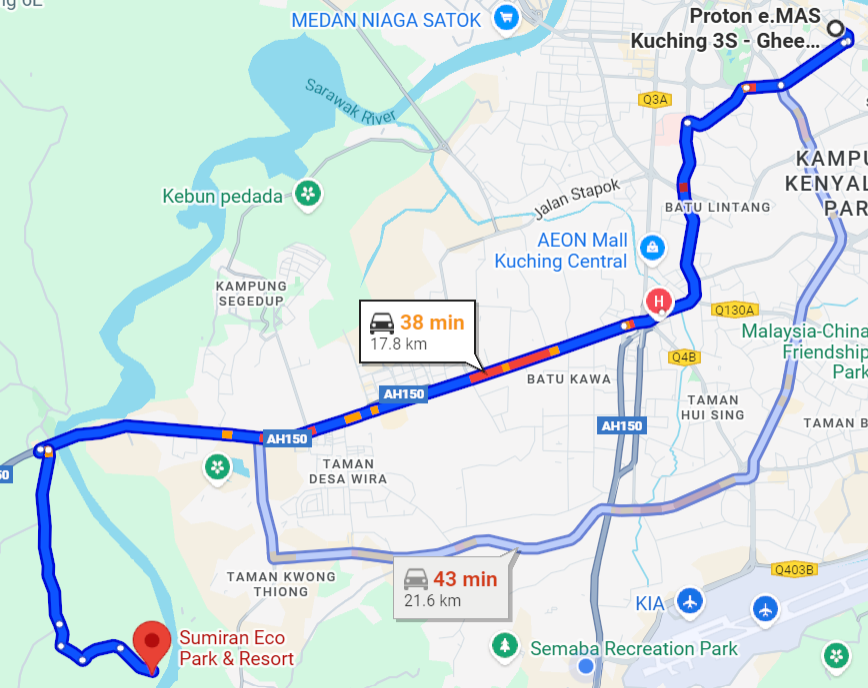

.png)
Event Overview
Date: Saturday, 8 November 2025 @ 9:00 AM
Gather Point: Proton e.MAS 3S Ghee Hua Kuching, Jalan Padungan
Destination: Sumiran Eco Park & Resort, Batu Kawa Matang
Note: ☕🥐 Light breakfast will be prepared before flag-off.
Getting There — Map & Navigation
Route Summary: Depart from Proton e.MAS 3S Ghee Hua Kuching (Jalan Padungan) via Jalan Tun Jugah → Jalan Rock / Route 1002 → Pan Borneo Highway (Route 1 / AH150), then turn into Jalan Rantau Panjang. Follow the signs to Sumiran Eco Park & Resort beside Rantau Panjang Bridge, Batu Kawa Matang. Estimated drive: 45–50 minutes.
- Maintain convoy formation on Pan Borneo Highway; moderate traffic expected near Batu Kawa.
- Look out for Sumiran Eco Park signage on the left before Rantau Panjang Bridge.
- Marshals will guide parking near Khemah Danau upon arrival.

Event Programme
- 9:00 AM — Arrival & registration at showroom; light breakfast; sticker/flag distribution.
- 9:30 AM — Safety & route briefing.
- 9:50 AM — Flag-off & group photo.
- 10:00 AM — Convoy departs via Matang route (~45 min).
- 10:30 AM — Arrival & welcome @ Khemah Danau.
- 10:40 AM — Field games / telematch.
- 12:00 PM — Lunch @ Khemah Danau.
- 1:30 PM — Community moment, lucky draw & group photo.
- 3:30 PM — Convoy returns to Kuching.
Safety & Convoy Discipline
- Maintain a two-second gap (increase in wet conditions).
- Hazards only for real hazards; keep left where possible; no undertaking.
- Follow lead; keep sweeper in sight; report incidents via walkie-talkie.
Games & Activities
- Isi Air Dalam Botol — Teams fill bottles using sponges; fastest team wins.
- Bowling Kelapa — Coconut "bowling ball" knocks down bottle pins; most knockdowns wins.
🎁 Prizes await winners.
Key Contacts
- Proton e.MAS 3S Ghee Hua — +6016-808 9127
- Brenda, Sales Manager — +6010-277 2722
- Nicholas, Convoy Marshal — +6018-668 1671